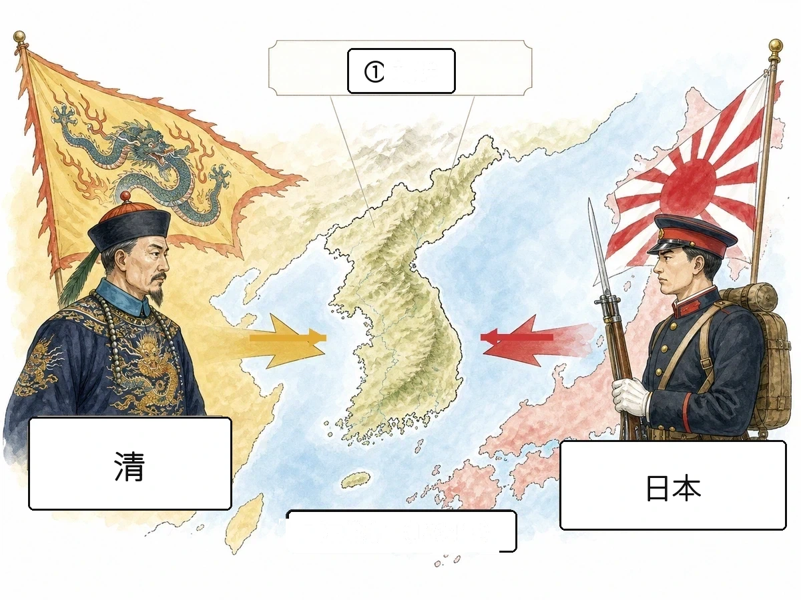

歴史 ⑫ 問題集 Web版
日清・日露の時代
条約改正 〜 明治文化
 いっしょに がんばろう！
いっしょに がんばろう！タブか下のリストから単元を選ぼう！
やり方（おすすめ順・穴埋め・一問一答・4択・記述）は単元を開いてから選べるよ。
やり方（おすすめ順・穴埋め・一問一答・4択・記述）は単元を開いてから選べるよ。
年
年表でチェック
（ ）をタップすると答えが出るよ。まずは自分で言ってから確かめよう！
| 年代 | できごと |
|---|---|
| 1890年 | 国民道徳の基本を示すが発布される |
| 1894年 | 陸奥宗光がの撤廃に成功する |
| 1894年 | 甲午農民戦争をきっかけにが始まる |
| 1895年 | 下関条約でや台湾などを獲得する |
| 1895年 | ロシアなどによるで遼東半島を清に返還する |
| 1900年 | 中国で外国勢力を排除しようとするが起こる |
| 1901年 | 官営のが操業を開始する |
| 1902年 | ロシアに対抗するためを結ぶ |
| 1904年 | が始まる |
| 1905年 | 東郷平八郎の連合艦隊がでロシア艦隊を破る |
| 1905年 | が結ばれ日露戦争が終わる |
| 1909年 | 初代韓国統監のが安重根に暗殺される |
| 1910年 | 日本が韓国を植民地とするが行われる |
| 1911年 | 小村寿太郎の交渉での回復に成功する |
| 1911年 | 中国で清をたおすが起こる |
| 1912年 | 孫文を臨時大総統としてが成立する |
1
条約改正
▶やり方をえらぼう目次にもどれば何度でも変えられるよ
解答：
採点：
順番：
順番：
A要点まとめ（ ）をタップして確かめよう
📖 先に参考書で理解する
幕末に結ばれた不平等条約の改正は、明治政府の悲願であった。改正の目標は、外国人を日本の法律で裁けないの撤廃と、輸入品の税率を自国で決めるの回復の2点であった。外相は、日本も欧米に劣らぬ文明国だと示そうとで舞踏会を開くを進めたが、行き過ぎた欧化として批判され交渉は失敗した。1886年に起きたは、領事裁判権の不平等さを人々に強く印象づけた。1894年、外相はとの間に日英通商航海条約を結び、領事裁判権の撤廃に初めて成功した。さらに1911年、外相がアメリカとの交渉で関税自主権の完全回復を実現し、半世紀にわたる条約改正が達成された。
B一問一答1 / 13
幕末に結ばれた不平等条約を平等にするための明治政府の悲願は？
📖 解説を読む（ヒント）
条約改正
幕末の不平等条約を改正する明治政府の悲願。領事裁判権の撤廃と関税自主権の回復の2点が目標だった。
B一問一答2 / 13
外国人を日本の法律で裁けない権利は？
📖 解説を読む（ヒント）
領事裁判権
日本にいる外国人が罪を犯しても、その国の領事が自国の法で裁く制度(治外法権)。1894年に陸奥宗光が撤廃に成功した。
B一問一答3 / 13
輸入品にかける税率を自国で決める権利は？
📖 解説を読む（ヒント）
関税自主権
輸入品の関税率を自国で決定できる権利。1911年に外相・小村寿太郎がアメリカと条約を結び完全回復に成功した。
B一問一答4 / 13
井上馨が条約改正のため西洋風の舞踏会を開いた建物は？
📖 解説を読む（ヒント）
鹿鳴館
1883年完成。外相・井上馨が条約改正のため西洋風の舞踏会を開いたが、極端な欧化政策が批判され改正は失敗した。
B一問一答5 / 13
1886年、日本人船客が見殺しにされた事件は？
📖 解説を読む（ヒント）
ノルマントン号事件
1886年、紀州沖でイギリス船ノルマントン号が沈没し日本人船客が見殺しにされた事件。領事裁判権の不平等を露呈した。
B一問一答6 / 13
1894年、領事裁判権の撤廃に成功した外相は？
📖 解説を読む（ヒント）
陸奥宗光
第2次伊藤博文内閣の外相。1894年に日英通商航海条約をイギリスと結び、領事裁判権の撤廃に成功した。
B一問一答7 / 13
1911年、関税自主権の回復に成功した外相は？
📖 解説を読む（ヒント）
小村寿太郎
明治の外交官。1905年のポーツマス条約交渉でも活躍し、1911年にアメリカとの条約で関税自主権を完全回復させた。
B一問一答8 / 13
1894年に陸奥宗光が結んだ、領事裁判権を撤廃した条約は？
📖 解説を読む（ヒント）
日英通商航海条約
1894年、日清戦争直前に外相・陸奥宗光がイギリスと結び、領事裁判権の撤廃に成功した条約。
B一問一答9 / 13
鹿鳴館外交で条約改正を目指した外相は？
📖 解説を読む（ヒント）
井上馨
第1次伊藤博文内閣の外相。鹿鳴館で西洋風の舞踏会を開く欧化政策で条約改正を目指したが、世論の批判で失敗した。
B一問一答10 / 13
井上馨が条約改正のために進めた、西洋風の生活様式を取り入れる政策は？
📖 解説を読む（ヒント）
欧化政策
日本も西洋並みに文明国だと示し条約改正を有利にしようと、井上馨が進めた西洋風の生活様式を取り入れる政策。
B一問一答12 / 13
関税自主権が完全回復した年は？
📖 解説を読む（ヒント）
1911年
外相・小村寿太郎がアメリカと条約を結び関税自主権を完全回復。幕末から約半世紀越しの条約改正が完成した年。
B一問一答13 / 13
最初に領事裁判権撤廃に応じた国は？
📖 解説を読む（ヒント）
イギリス
1894年に日英通商航海条約で初めて応じた国。ロシアの南下を警戒し、日本との関係を強化するために譲歩した。
B一問一答全13問・まとめて採点
まず全部の問題にこたえてから、下のボタンでまとめて答え合わせしよう！
(1)幕末に結ばれた不平等条約を平等にするための明治政府の悲願は？
条約改正
幕末の不平等条約を改正する明治政府の悲願。領事裁判権の撤廃と関税自主権の回復の2点が目標だった。
(2)外国人を日本の法律で裁けない権利は？
領事裁判権
日本にいる外国人が罪を犯しても、その国の領事が自国の法で裁く制度(治外法権)。1894年に陸奥宗光が撤廃に成功した。
(3)輸入品にかける税率を自国で決める権利は？
関税自主権
輸入品の関税率を自国で決定できる権利。1911年に外相・小村寿太郎がアメリカと条約を結び完全回復に成功した。
(4)井上馨が条約改正のため西洋風の舞踏会を開いた建物は？
鹿鳴館
1883年完成。外相・井上馨が条約改正のため西洋風の舞踏会を開いたが、極端な欧化政策が批判され改正は失敗した。
(5)1886年、日本人船客が見殺しにされた事件は？
ノルマントン号事件
1886年、紀州沖でイギリス船ノルマントン号が沈没し日本人船客が見殺しにされた事件。領事裁判権の不平等を露呈した。
(6)1894年、領事裁判権の撤廃に成功した外相は？
陸奥宗光
第2次伊藤博文内閣の外相。1894年に日英通商航海条約をイギリスと結び、領事裁判権の撤廃に成功した。
(7)1911年、関税自主権の回復に成功した外相は？
小村寿太郎
明治の外交官。1905年のポーツマス条約交渉でも活躍し、1911年にアメリカとの条約で関税自主権を完全回復させた。
(8)1894年に陸奥宗光が結んだ、領事裁判権を撤廃した条約は？
日英通商航海条約
1894年、日清戦争直前に外相・陸奥宗光がイギリスと結び、領事裁判権の撤廃に成功した条約。
(9)鹿鳴館外交で条約改正を目指した外相は？
井上馨
第1次伊藤博文内閣の外相。鹿鳴館で西洋風の舞踏会を開く欧化政策で条約改正を目指したが、世論の批判で失敗した。
(10)井上馨が条約改正のために進めた、西洋風の生活様式を取り入れる政策は？
欧化政策
日本も西洋並みに文明国だと示し条約改正を有利にしようと、井上馨が進めた西洋風の生活様式を取り入れる政策。
(11)領事裁判権が撤廃された年は？
1894年
外相・陸奥宗光が日清戦争の直前にイギリスと日英通商航海条約を結び、領事裁判権の撤廃に成功した年。
(12)関税自主権が完全回復した年は？
1911年
外相・小村寿太郎がアメリカと条約を結び関税自主権を完全回復。幕末から約半世紀越しの条約改正が完成した年。
(13)最初に領事裁判権撤廃に応じた国は？
イギリス
1894年に日英通商航海条約で初めて応じた国。ロシアの南下を警戒し、日本との関係を強化するために譲歩した。

2
日清戦争と三国干渉
▶やり方をえらぼう目次にもどれば何度でも変えられるよ
解答：
採点：
順番：
順番：
A要点まとめ（ ）をタップして確かめよう
📖 先に参考書で理解する
1894年、朝鮮で起きたをきっかけに、朝鮮の支配権をめぐって日本と清が戦うが始まった。近代化を進めていた日本が勝利し、1895年に山口県でが結ばれた。日本側は伊藤博文と陸奥宗光、清側はが交渉にあたり、日本は清からと、多額の賠償金を得た。しかしロシアがドイツ・フランスを誘って遼東半島の返還を求めるを行うと、日本はこれを受け入れて返還した。この屈辱に国民はを合言葉に耐え忍び、ロシアへの対抗心を強めた。得られた賠償金の一部は、のちのの建設費に充てられ、日本の重工業発展の土台となった。
B一問一答1 / 12
1894〜95年に朝鮮をめぐって日本と清が戦った戦争は？
📖 解説を読む（ヒント）
日清戦争
朝鮮で起きた甲午農民戦争（東学党の乱）をきっかけに日本と清が朝鮮の支配権をめぐって戦った戦争。
B一問一答2 / 12
1895年に日清戦争の講和として結ばれた条約は？
📖 解説を読む（ヒント）
下関条約
山口県下関で締結された日清戦争の講和条約。日本側は伊藤博文・陸奥宗光、清側は李鴻章が交渉した。
B一問一答3 / 12
下関条約で日本が獲得した中国東北部の半島は？
📖 解説を読む（ヒント）
遼東半島
1895年の下関条約で清から獲得したが、ロシア・ドイツ・フランスによる三国干渉で清へ返還させられた。
B一問一答5 / 12
ロシア・ドイツ・フランスが遼東半島の返還を日本に迫った事件は？
📖 解説を読む（ヒント）
三国干渉
1895年、ロシア主導でドイツ・フランスが日本に遼東半島の清への返還を勧告。日本は受け入れて返還した。
B一問一答6 / 12
日清戦争のきっかけとなった朝鮮の農民反乱は？
📖 解説を読む（ヒント）
甲午農民戦争（東学党の乱）
1894年、新興宗教・東学の信徒が中心となった朝鮮の農民反乱。鎮圧を機に日清両軍が出兵し日清戦争が始まった。
B一問一答7 / 12
下関条約で清側を代表した政治家は？
📖 解説を読む（ヒント）
李鴻章
清末の有力政治家。中国北部の軍と外交を任され、西洋技術を取り入れる近代化(洋務運動)を進めた。下関条約の清側代表。
B一問一答8 / 12
三国干渉後、日本国民が掲げた合言葉は？
📖 解説を読む（ヒント）
臥薪嘗胆
三国干渉で遼東半島を返還させられた屈辱を耐え、ロシアへの復讐心を表す合言葉。日露戦争の世論を支えた。
B一問一答9 / 12
下関条約の賠償金などで建設された官営製鉄所は？
📖 解説を読む（ヒント）
八幡製鉄所
1901年に福岡県で操業を開始した官営製鉄所。下関条約の賠償金を建設費に充て、日本の重工業の基礎となった。
B一問一答11 / 12
下関条約が結ばれ、日清戦争が終結した年は？
📖 解説を読む（ヒント）
1895年
日本が勝利して下関条約を締結。台湾・遼東半島の割譲や約2億両の賠償金など、清に厳しい条件を課した年。
B一問一答全12問・まとめて採点
まず全部の問題にこたえてから、下のボタンでまとめて答え合わせしよう！
(1)1894〜95年に朝鮮をめぐって日本と清が戦った戦争は？
日清戦争
朝鮮で起きた甲午農民戦争（東学党の乱）をきっかけに日本と清が朝鮮の支配権をめぐって戦った戦争。
(2)1895年に日清戦争の講和として結ばれた条約は？
下関条約
山口県下関で締結された日清戦争の講和条約。日本側は伊藤博文・陸奥宗光、清側は李鴻章が交渉した。
(3)下関条約で日本が獲得した中国東北部の半島は？
遼東半島
1895年の下関条約で清から獲得したが、ロシア・ドイツ・フランスによる三国干渉で清へ返還させられた。
(4)下関条約で日本が獲得した島は？
台湾
1895年の下関条約で清から割譲され、台湾総督府が設置された日本初の植民地。1945年の敗戦まで日本領だった。
(5)ロシア・ドイツ・フランスが遼東半島の返還を日本に迫った事件は？
三国干渉
1895年、ロシア主導でドイツ・フランスが日本に遼東半島の清への返還を勧告。日本は受け入れて返還した。
(6)日清戦争のきっかけとなった朝鮮の農民反乱は？
甲午農民戦争（東学党の乱）
1894年、新興宗教・東学の信徒が中心となった朝鮮の農民反乱。鎮圧を機に日清両軍が出兵し日清戦争が始まった。
(7)下関条約で清側を代表した政治家は？
李鴻章
清末の有力政治家。中国北部の軍と外交を任され、西洋技術を取り入れる近代化(洋務運動)を進めた。下関条約の清側代表。
(8)三国干渉後、日本国民が掲げた合言葉は？
臥薪嘗胆
三国干渉で遼東半島を返還させられた屈辱を耐え、ロシアへの復讐心を表す合言葉。日露戦争の世論を支えた。
(9)下関条約の賠償金などで建設された官営製鉄所は？
八幡製鉄所
1901年に福岡県で操業を開始した官営製鉄所。下関条約の賠償金を建設費に充て、日本の重工業の基礎となった。
(10)日清戦争が始まった年は？
1894年
朝鮮で起きた甲午農民戦争を契機に、日清両軍が出兵し朝鮮の支配権をめぐる日清戦争が開戦した年。
(11)下関条約が結ばれ、日清戦争が終結した年は？
1895年
日本が勝利して下関条約を締結。台湾・遼東半島の割譲や約2億両の賠償金など、清に厳しい条件を課した年。
(12)三国干渉を主導した国は？
ロシア
南下政策で満州・朝鮮への進出を狙うロシアが、ドイツ・フランスを誘って日本に遼東半島の返還を迫った。
E資料問題写真を見て答えよう

(1)図中の①の、日本と清が勢力をめぐって争った、二国の間にある地域（国）はどこか。
(2)図のように、朝鮮をめぐって対立した日本と清が、1894年に始めた戦争を何というか。
3
日露戦争
▶やり方をえらぼう目次にもどれば何度でも変えられるよ
解答：
採点：
順番：
順番：
A要点まとめ（ ）をタップして確かめよう
📖 先に参考書で理解する
1900年に中国でが起こると、ロシアは鎮圧後も満州にとどまり南下の姿勢を強めた。日本は1902年にイギリスとを結んでこれに対抗し、1904年にはが始まった。1905年、東郷平八郎が率いる連合艦隊がでロシアのバルチック艦隊を破り、戦局は日本優位で進んだ。同年、アメリカ大統領の仲介でが結ばれ、外相が交渉にあたった。この条約で日本はや長春以南の鉄道の利権（のちの）、樺太の南半分などを得たが、賠償金は得られず、不満を持った民衆がを起こした。一方、キリスト教徒のや歌人の与謝野晶子は、戦争に反対する立場を表明した。
B一問一答1 / 14
1904〜05年に日本とロシアが戦った戦争は？
📖 解説を読む（ヒント）
日露戦争
満州・朝鮮の権益をめぐる対立から開戦。日本海海戦などで日本が勝利し、ポーツマス条約で講和した。
B一問一答2 / 14
1902年、ロシアに対抗するために結ばれた日本とイギリスの同盟は？
📖 解説を読む（ヒント）
日英同盟
1902年に結ばれた、ロシアの南下に対抗する軍事同盟。日露戦争の重要な外交的基盤となった。
B一問一答3 / 14
1900年、中国で起きた排外運動は？
📖 解説を読む（ヒント）
義和団事件
「扶清滅洋」を掲げ列強の北京公使館を包囲。日本を含む8か国連合軍が鎮圧し、ロシアが満州に居座る原因となった。
B一問一答4 / 14
1905年に日露戦争の講和として結ばれた条約は？
📖 解説を読む（ヒント）
ポーツマス条約
アメリカ大統領セオドア・ルーズベルトの仲介で結ばれた講和条約。樺太南半分や南満州鉄道の権益を獲得した。
B一問一答6 / 14
ポーツマス条約を仲介したアメリカ大統領は？
📖 解説を読む（ヒント）
セオドア・ルーズベルト
第26代米大統領。1905年に日露戦争のポーツマス講和を仲介し、その功績でノーベル平和賞を受賞した。
B一問一答7 / 14
ポーツマス条約で日本が獲得した、朝鮮支配の権利は？
📖 解説を読む（ヒント）
韓国の優越権
ポーツマス条約でロシアが認めた、朝鮮半島での日本の独占的指導権。後の韓国併合の道を開いた。
B一問一答8 / 14
ポーツマス条約で日本が獲得した、満州の鉄道権益は？
📖 解説を読む（ヒント）
南満州鉄道
1905年のポーツマス条約でロシアから譲渡。略称「満鉄」として、日本の満州進出と権益拡大の拠点となった。
B一問一答9 / 14
ポーツマス条約で日本が獲得した北方の地域は？
📖 解説を読む（ヒント）
樺太の南半分
1905年のポーツマス条約でロシアから割譲された北緯50度以南の地域。1945年の敗戦でソ連に占領された。
B一問一答10 / 14
日本海海戦でロシアのバルチック艦隊を破った海軍大将は？
📖 解説を読む（ヒント）
東郷平八郎
連合艦隊司令長官として、1905年の日本海海戦でロシアのバルチック艦隊を撃破し「東洋のネルソン」と呼ばれた。
B一問一答11 / 14
1905年、日本海軍がロシアのバルチック艦隊を破った海戦は？
📖 解説を読む（ヒント）
日本海海戦
1905年5月、連合艦隊司令長官・東郷平八郎の指揮でロシアのバルチック艦隊を壊滅させた海戦。
B一問一答12 / 14
「君死にたまふことなかれ」で戦争を批判した歌人は？
📖 解説を読む（ヒント）
与謝野晶子
歌集「みだれ髪」で知られる歌人。日露戦争中、旅順攻撃に出征した弟を案じる詩で戦争を批判した。
B一問一答全14問・まとめて採点
まず全部の問題にこたえてから、下のボタンでまとめて答え合わせしよう！
(1)1904〜05年に日本とロシアが戦った戦争は？
日露戦争
満州・朝鮮の権益をめぐる対立から開戦。日本海海戦などで日本が勝利し、ポーツマス条約で講和した。
(2)1902年、ロシアに対抗するために結ばれた日本とイギリスの同盟は？
日英同盟
1902年に結ばれた、ロシアの南下に対抗する軍事同盟。日露戦争の重要な外交的基盤となった。
(3)1900年、中国で起きた排外運動は？
義和団事件
「扶清滅洋」を掲げ列強の北京公使館を包囲。日本を含む8か国連合軍が鎮圧し、ロシアが満州に居座る原因となった。
(4)1905年に日露戦争の講和として結ばれた条約は？
ポーツマス条約
アメリカ大統領セオドア・ルーズベルトの仲介で結ばれた講和条約。樺太南半分や南満州鉄道の権益を獲得した。
(5)ポーツマス条約の日本側全権大使は？
小村寿太郎
明治の外交官。外相としてポーツマス条約交渉を担い、1911年には関税自主権の回復にも成功した。
(6)ポーツマス条約を仲介したアメリカ大統領は？
セオドア・ルーズベルト
第26代米大統領。1905年に日露戦争のポーツマス講和を仲介し、その功績でノーベル平和賞を受賞した。
(7)ポーツマス条約で日本が獲得した、朝鮮支配の権利は？
韓国の優越権
ポーツマス条約でロシアが認めた、朝鮮半島での日本の独占的指導権。後の韓国併合の道を開いた。
(8)ポーツマス条約で日本が獲得した、満州の鉄道権益は？
南満州鉄道
1905年のポーツマス条約でロシアから譲渡。略称「満鉄」として、日本の満州進出と権益拡大の拠点となった。
(9)ポーツマス条約で日本が獲得した北方の地域は？
樺太の南半分
1905年のポーツマス条約でロシアから割譲された北緯50度以南の地域。1945年の敗戦でソ連に占領された。
(10)日本海海戦でロシアのバルチック艦隊を破った海軍大将は？
東郷平八郎
連合艦隊司令長官として、1905年の日本海海戦でロシアのバルチック艦隊を撃破し「東洋のネルソン」と呼ばれた。
(11)1905年、日本海軍がロシアのバルチック艦隊を破った海戦は？
日本海海戦
1905年5月、連合艦隊司令長官・東郷平八郎の指揮でロシアのバルチック艦隊を壊滅させた海戦。
(12)「君死にたまふことなかれ」で戦争を批判した歌人は？
与謝野晶子
歌集「みだれ髪」で知られる歌人。日露戦争中、旅順攻撃に出征した弟を案じる詩で戦争を批判した。
(13)日露戦争が始まった年は？
1904年
満州・朝鮮の権益をめぐる対立を背景に、日本軍の旅順攻撃により日露戦争が開戦した年。
(14)ポーツマス条約が結ばれ、日露戦争が終結した年は？
1905年
アメリカ大統領セオドア・ルーズベルトの仲介で講和が成立し、日露戦争が終結した年。
4
韓国併合と中国の革命
▶やり方をえらぼう目次にもどれば何度でも変えられるよ
解答：
採点：
順番：
順番：
A要点まとめ（ ）をタップして確かめよう
📖 先に参考書で理解する
日露戦争後の1905年、日本はを置いて韓国を保護国とし、初代統監にはが就任した。1909年、伊藤博文は満州のハルビン駅で朝鮮の独立運動家に暗殺された。1910年、日本はを行って韓国を植民地とし、統治のためにを設置して土地調査事業などを進め、多くの朝鮮農民が土地を失った。同じころ中国では、が民族・民権・民生からなるを唱えて指導するが1911年に起こり、約260年続いた清王朝が倒された。翌1912年にはアジア初の共和国が成立し、その後まもなく実権はに移った。
B一問一答1 / 14
1910年、日本が韓国を植民地化したできごとは？
📖 解説を読む（ヒント）
韓国併合
日韓併合条約を結び、朝鮮総督府を設置して1945年の敗戦まで朝鮮半島を植民地として支配した。
B一問一答3 / 14
韓国併合後、植民地統治のために設置された機関は？
📖 解説を読む（ヒント）
朝鮮総督府
1910年の韓国併合後、京城（現在のソウル）に置かれた統治機関。初代総督は陸軍出身の寺内正毅。
B一問一答4 / 14
初代韓国統監を務め、1909年にハルビン駅で暗殺された政治家は？
📖 解説を読む（ヒント）
伊藤博文
初代内閣総理大臣・初代韓国統監。1909年、満州ハルビン駅で朝鮮の独立運動家・安重根に暗殺された。
B一問一答5 / 14
1909年にハルビン駅で伊藤博文を暗殺した朝鮮の独立運動家は？
📖 解説を読む（ヒント）
安重根
朝鮮の独立運動家。1909年、ハルビン駅で初代韓国統監の伊藤博文を暗殺し、韓国では独立の英雄とされる。
B一問一答6 / 14
1905年に設置された、韓国を保護国とするための機関は？
📖 解説を読む（ヒント）
韓国統監府
日露戦争後の1905年に第二次日韓協約で設置。初代統監は伊藤博文で、1910年に朝鮮総督府へ改組された。
B一問一答7 / 14
1911年、中国で清王朝を倒した革命は？
📖 解説を読む（ヒント）
辛亥革命
孫文の指導で起き、約260年続いた清王朝を倒した。翌1912年にアジア初の共和国・中華民国が成立した。
B一問一答10 / 14
辛亥革命によって成立した、アジア初の共和国は？
📖 解説を読む（ヒント）
中華民国
1912年に孫文を臨時大総統として南京で建国された、アジア初の共和国。清王朝の支配を終わらせた。
B一問一答11 / 14
孫文に代わって中華民国の臨時大総統となった人物は？
📖 解説を読む（ヒント）
袁世凱
清の有力な軍を率いた実力者。1912年に清の最後の皇帝・宣統帝を退位させ、孫文から国の代表(臨時大総統)を引き継いだ。
B一問一答13 / 14
辛亥革命で退位した清の最後の皇帝は？
📖 解説を読む（ヒント）
宣統帝（溥儀）
清王朝最後の皇帝。1912年に退位し清は滅亡。後に満州事変後、日本が建国した満州国の皇帝となった。
B一問一答14 / 14
韓国併合後、朝鮮で行われた土地の所有権を確定する事業は？
📖 解説を読む（ヒント）
土地調査事業
1910年代に朝鮮総督府が実施。届出制で多くの朝鮮農民が土地を失い、日本人や朝鮮開発の国策会社(東洋拓殖会社)が獲得した。
B一問一答全14問・まとめて採点
まず全部の問題にこたえてから、下のボタンでまとめて答え合わせしよう！
(1)1910年、日本が韓国を植民地化したできごとは？
韓国併合
日韓併合条約を結び、朝鮮総督府を設置して1945年の敗戦まで朝鮮半島を植民地として支配した。
(2)韓国併合が行われた年は？
1910年
日本が日韓併合条約を結び朝鮮を植民地とした年。朝鮮総督府が設置され、1945年まで支配が続いた。
(3)韓国併合後、植民地統治のために設置された機関は？
朝鮮総督府
1910年の韓国併合後、京城（現在のソウル）に置かれた統治機関。初代総督は陸軍出身の寺内正毅。
(4)初代韓国統監を務め、1909年にハルビン駅で暗殺された政治家は？
伊藤博文
初代内閣総理大臣・初代韓国統監。1909年、満州ハルビン駅で朝鮮の独立運動家・安重根に暗殺された。
(5)1909年にハルビン駅で伊藤博文を暗殺した朝鮮の独立運動家は？
安重根
朝鮮の独立運動家。1909年、ハルビン駅で初代韓国統監の伊藤博文を暗殺し、韓国では独立の英雄とされる。
(6)1905年に設置された、韓国を保護国とするための機関は？
韓国統監府
日露戦争後の1905年に第二次日韓協約で設置。初代統監は伊藤博文で、1910年に朝鮮総督府へ改組された。
(7)1911年、中国で清王朝を倒した革命は？
辛亥革命
孫文の指導で起き、約260年続いた清王朝を倒した。翌1912年にアジア初の共和国・中華民国が成立した。
(8)辛亥革命を指導した中国の革命家は？
孫文
三民主義（民族・民権・民生）を唱え辛亥革命を指導。1912年に中華民国を建国し、初代臨時大総統に就任した。
(9)孫文が唱えた革命の三大理念は？
三民主義
孫文が掲げた理念。民族の独立(民族)・国民の政治参加(民権)・人々の生活安定(民生)の3つから成る。
(10)辛亥革命によって成立した、アジア初の共和国は？
中華民国
1912年に孫文を臨時大総統として南京で建国された、アジア初の共和国。清王朝の支配を終わらせた。
(11)孫文に代わって中華民国の臨時大総統となった人物は？
袁世凱
清の有力な軍を率いた実力者。1912年に清の最後の皇帝・宣統帝を退位させ、孫文から国の代表(臨時大総統)を引き継いだ。
(12)中華民国が成立した年は？
1912年
前年の辛亥革命を受けて孫文を臨時大総統として建国された、アジア初の共和国が誕生した年。
(13)辛亥革命で退位した清の最後の皇帝は？
宣統帝（溥儀）
清王朝最後の皇帝。1912年に退位し清は滅亡。後に満州事変後、日本が建国した満州国の皇帝となった。
(14)韓国併合後、朝鮮で行われた土地の所有権を確定する事業は？
土地調査事業
1910年代に朝鮮総督府が実施。届出制で多くの朝鮮農民が土地を失い、日本人や朝鮮開発の国策会社(東洋拓殖会社)が獲得した。
5
日本の産業革命
▶やり方をえらぼう目次にもどれば何度でも変えられるよ
解答：
採点：
順番：
順番：
A要点まとめ（ ）をタップして確かめよう
📖 先に参考書で理解する
明治後期、機械を用いた工業生産が広がるが日本でも進んだ。まず綿花から綿糸をつくるや、蚕の繭から生糸をつくるなどの軽工業が発展し、生糸は最大の輸出品となった。日清戦争の賠償金などをもとに1901年には官営の八幡製鉄所が操業を始め、鉄鋼や機械などのも本格的に発展していった。この過程で三井・三菱・住友・安田など、金融や工業を支配するが力を強めた。一方で急速な産業発展は社会問題も生み、栃木県ではが起こり、衆議院議員のは被害の解決を天皇に直訴した。労働者は労働条件の改善を求めて労働組合を結成し、らは平等な社会を目指すを唱えたが、1910年ので厳しく弾圧された。
B一問一答1 / 14
機械を用いた工業生産が広がり、社会・経済の仕組みが大きく変わることを何という？
📖 解説を読む（ヒント）
産業革命
機械化で工業生産が広がる変化。日本では明治後期の1890年代に紡績業など軽工業から始まった。
B一問一答9 / 14
明治期に発展した四大財閥は？
📖 解説を読む（ヒント）
三井・三菱・住友・安田
三井は江戸期の両替商、三菱は岩崎弥太郎が創業。金融・鉱山・造船など多分野で日本の産業を主導した。
B一問一答10 / 14
栃木県で起きた、日本初の公害問題は？
📖 解説を読む（ヒント）
足尾銅山鉱毒事件
1890年代以降、渡良瀬川流域に銅山の鉱毒が流れ込み、農作物や住民に深刻な被害を与えた公害事件。
B一問一答12 / 14
労働者が労働条件の改善を求めて結成した組織は？
📖 解説を読む（ヒント）
労働組合
賃上げや労働時間短縮を要求する団体。明治末期、工場法制定(1911年)前後から労働運動が広がった。
B一問一答13 / 14
労働者の立場から平等な社会を目指す思想は？
📖 解説を読む（ヒント）
社会主義
工場や土地を社会で共有し平等な社会を目指す思想。幸徳秋水らが運動したが、政府は労働運動を取り締まる法律で弾圧した。
B一問一答14 / 14
1910年に幸徳秋水らが処刑された事件は？
📖 解説を読む（ヒント）
大逆事件
明治天皇暗殺計画を口実に幸徳秋水ら12名が処刑された冤罪事件。社会主義運動への大弾圧となった。
B一問一答全14問・まとめて採点
まず全部の問題にこたえてから、下のボタンでまとめて答え合わせしよう！
(1)機械を用いた工業生産が広がり、社会・経済の仕組みが大きく変わることを何という？
産業革命
機械化で工業生産が広がる変化。日本では明治後期の1890年代に紡績業など軽工業から始まった。
(2)繊維など、生活用品をつくる産業を何という？
軽工業
紡績業や製糸業など繊維工業が中心。明治20〜30年代の日本の産業革命をけん引した。
(3)鉄や機械など、重い物をつくる産業を何という？
重工業
鉄鋼・機械・造船などが該当。日本では1901年の八幡製鉄所操業や日露戦争後に本格的に発展した。
(4)綿花から綿糸をつくる産業を何という？
紡績業
1883年設立の大阪紡績会社などが機械化を進め、明治後期に綿糸の生産量は世界有数となった。
(5)蚕の繭から生糸をつくる産業を何という？
製糸業
生糸は明治期日本最大の輸出品で外貨獲得の柱。長野・群馬などの工女が支え、世界一の輸出国となった。
(6)1901年に操業を開始した官営製鉄所は？
八幡製鉄所
福岡県に設立。日清戦争の賠償金などで建設され、日本の重工業と鉄鋼自給の基礎となった。
(7)八幡製鉄所が操業を開始した年は？
1901年
福岡県に設立された官営製鉄所で、日本の重工業の出発点。日清戦争の賠償金が建設費に使われた。
(8)三井・三菱・住友などの大企業集団は？
財閥
金融・商業・工業など多分野で経済を支配した同族中心の企業集団。三井・三菱・住友・安田が四大財閥。
(9)明治期に発展した四大財閥は？
三井・三菱・住友・安田
三井は江戸期の両替商、三菱は岩崎弥太郎が創業。金融・鉱山・造船など多分野で日本の産業を主導した。
(10)栃木県で起きた、日本初の公害問題は？
足尾銅山鉱毒事件
1890年代以降、渡良瀬川流域に銅山の鉱毒が流れ込み、農作物や住民に深刻な被害を与えた公害事件。
(11)足尾銅山鉱毒事件で天皇に直訴した衆議院議員は？
田中正造
栃木県選出の衆議院議員。1901年に天皇へ直訴を試み、生涯を農民救済と公害告発に捧げた。
(12)労働者が労働条件の改善を求めて結成した組織は？
労働組合
賃上げや労働時間短縮を要求する団体。明治末期、工場法制定(1911年)前後から労働運動が広がった。
(13)労働者の立場から平等な社会を目指す思想は？
社会主義
工場や土地を社会で共有し平等な社会を目指す思想。幸徳秋水らが運動したが、政府は労働運動を取り締まる法律で弾圧した。
(14)1910年に幸徳秋水らが処刑された事件は？
大逆事件
明治天皇暗殺計画を口実に幸徳秋水ら12名が処刑された冤罪事件。社会主義運動への大弾圧となった。
6
明治の文化
▶やり方をえらぼう目次にもどれば何度でも変えられるよ
解答：
採点：
順番：
順番：
A要点まとめ（ ）をタップして確かめよう
📖 先に参考書で理解する
明治後期には近代的な文化が花開いた。文学では、話し言葉に近い文体で小説を書くの運動が広がり、は「坊っちゃん」などで近代日本人の苦悩を描き、軍医でもあったは「舞姫」を著した。女性作家のは「たけくらべ」を残し、歌人のは情熱的な歌集「みだれ髪」で知られる。医学の分野では、が破傷風の血清療法を確立し、はアフリカで黄熱病を研究した。美術では、フランスで学んだが「湖畔」を描き、は東京美術学校の設立に尽力して日本美術を世界に紹介した。教育の面では、1890年に国民道徳の基本を示すが発布され、1907年には義務教育の年限が6年に延長されて就学率がほぼ100%に達した。
B一問一答1 / 14
話し言葉に近い文体で文学作品を書く運動は？
📖 解説を読む（ヒント）
言文一致
話し言葉に近い文体で文学を書く運動。二葉亭四迷が1887年の「浮雲」で実践し、近代日本文学の出発点となった。
B一問一答3 / 14
「坊っちゃん」「吾輩は猫である」「こころ」などを著した作家は？
📖 解説を読む（ヒント）
夏目漱石
明治を代表する小説家。イギリス留学を経て大学講師から作家へ転じ、近代日本人の苦悩や孤独を描いた。
B一問一答5 / 14
「たけくらべ」「にごりえ」を著した女性作家は？
📖 解説を読む（ヒント）
樋口一葉
「たけくらべ」「にごりえ」などで知られる明治の女性作家。24歳で夭逝し、5千円札の肖像にもなった。
B一問一答7 / 14
「一握の砂」「悲しき玩具」を著した歌人は？
📖 解説を読む（ヒント）
石川啄木
岩手県出身の歌人。三行書きの短歌で生活の哀感を詠み、「一握の砂」などを残して26歳で亡くなった。
B一問一答8 / 14
「みだれ髪」を著した歌人で、日露戦争に反対した人物は？
📖 解説を読む（ヒント）
与謝野晶子
情熱的な歌集「みだれ髪」で知られる歌人。日露戦争中、出征した弟を案じる「君死にたまふことなかれ」を発表した。
B一問一答10 / 14
黄熱病を研究したアフリカで没した細菌学者は？
📖 解説を読む（ヒント）
野口英世
福島県出身の細菌学者。アメリカ・アフリカで黄熱病を研究中に感染して没した。旧千円札の肖像にもなった。
B一問一答13 / 14
「無我」などを描いた日本画家は？
📖 解説を読む（ヒント）
横山大観
代表作「無我」「生々流転」で知られる近代日本画の巨匠。岡倉天心とともに日本美術院を創設し発展に尽くした。
B一問一答14 / 14
「荒城の月」「箱根八里」「花」などを作曲した音楽家は？
📖 解説を読む（ヒント）
滝廉太郎
「荒城の月」「箱根八里」「花」などを残した明治の作曲家。ドイツ留学中に結核を患い、23歳で夭逝した。
B一問一答全14問・まとめて採点
まず全部の問題にこたえてから、下のボタンでまとめて答え合わせしよう！
(1)話し言葉に近い文体で文学作品を書く運動は？
言文一致
話し言葉に近い文体で文学を書く運動。二葉亭四迷が1887年の「浮雲」で実践し、近代日本文学の出発点となった。
(2)「浮雲」で言文一致体を実践した作家は？
二葉亭四迷
1887年発表の「浮雲」で話し言葉に近い言文一致体を実践し、近代日本文学の出発点を築いた作家。
(3)「坊っちゃん」「吾輩は猫である」「こころ」などを著した作家は？
夏目漱石
明治を代表する小説家。イギリス留学を経て大学講師から作家へ転じ、近代日本人の苦悩や孤独を描いた。
(4)「舞姫」「高瀬舟」などを著した作家・医師は？
森鴎外
陸軍軍医として活躍したドイツ留学経験のある小説家。「舞姫」などで近代知識人の苦悩を描いた。
(5)「たけくらべ」「にごりえ」を著した女性作家は？
樋口一葉
「たけくらべ」「にごりえ」などで知られる明治の女性作家。24歳で夭逝し、5千円札の肖像にもなった。
(6)俳句・短歌の革新運動を進めた俳人は？
正岡子規
「写生」を重視して俳句・短歌の革新運動を進めた明治の俳人・歌人。雑誌「ホトトギス」の中心人物。
(7)「一握の砂」「悲しき玩具」を著した歌人は？
石川啄木
岩手県出身の歌人。三行書きの短歌で生活の哀感を詠み、「一握の砂」などを残して26歳で亡くなった。
(8)「みだれ髪」を著した歌人で、日露戦争に反対した人物は？
与謝野晶子
情熱的な歌集「みだれ髪」で知られる歌人。日露戦争中、出征した弟を案じる「君死にたまふことなかれ」を発表した。
(9)破傷風の血清療法を発見した細菌学者は？
北里柴三郎
ドイツ留学中に破傷風の血清療法を確立。後にペスト菌も発見した近代日本医学の父で、新千円札の肖像。
(10)黄熱病を研究したアフリカで没した細菌学者は？
野口英世
福島県出身の細菌学者。アメリカ・アフリカで黄熱病を研究中に感染して没した。旧千円札の肖像にもなった。
(11)赤痢菌を発見した細菌学者は？
志賀潔
北里柴三郎の弟子で、伝染病研究所に勤務。1897年に赤痢菌を発見し、学名にも「Shigella」として残る。
(12)「湖畔」を描いた西洋画家は？
黒田清輝
代表作「湖畔」「読書」で知られる明治の洋画家。フランス留学で印象派の明るい外光表現を学び日本に伝えた。
(13)「無我」などを描いた日本画家は？
横山大観
代表作「無我」「生々流転」で知られる近代日本画の巨匠。岡倉天心とともに日本美術院を創設し発展に尽くした。
(14)「荒城の月」「箱根八里」「花」などを作曲した音楽家は？
滝廉太郎
「荒城の月」「箱根八里」「花」などを残した明治の作曲家。ドイツ留学中に結核を患い、23歳で夭逝した。
D記述問題1 / 3 文章で説明しよう
「坊っちゃん」などの小説を書き、近代日本人の心のあり方を描いた明治を代表する作家はだれか、その作品にもふれて説明しなさい。
指定語句 夏目漱石坊っちゃん
📖 解説を読む（ヒント）
解答
年表でチェック
教育勅語 領事裁判権 日清戦争 遼東半島 三国干渉 義和団事件 八幡製鉄所 日英同盟 日露戦争 日本海海戦 ポーツマス条約 伊藤博文 韓国併合 関税自主権 辛亥革命 中華民国
1 条約改正
A 要点まとめ① 領事裁判権 ② 関税自主権 ③ 井上馨 ④ 鹿鳴館 ⑤ 欧化政策 ⑥ ノルマントン号事件 ⑦ 陸奥宗光 ⑧ イギリス ⑨ 小村寿太郎
B 一問一答(1) 条約改正 (2) 領事裁判権 (3) 関税自主権 (4) 鹿鳴館 (5) ノルマントン号事件 (6) 陸奥宗光 (7) 小村寿太郎 (8) 日英通商航海条約 (9) 井上馨 (10) 欧化政策 (11) 1894年 (12) 1911年 (13) イギリス
C 実戦問題(1) ウ（ノルマントン号事件） (2) ウ（欧化政策が批判された） (3) エ（イギリス） (4) ア（1894年） (5) エ（1911年） (6) イ（ロシアの南下への警戒） (7) ア（西洋風の舞踏会） (8) エ（ポーツマス条約）
D 記述問題
(1) 日本も欧米に劣らぬ文明国だと示すため鹿鳴館で舞踏会を開くなど欧化政策を進めたが、行き過ぎた欧化として国内で批判されたから。
(2) 領事裁判権は外国人を日本の法律で裁けない権利の撤廃、関税自主権は輸入品の税率を自国で決める権利の回復で、内容が異なる。
2 日清戦争と三国干渉
A 要点まとめ① 甲午農民戦争 ② 日清戦争 ③ 下関条約 ④ 李鴻章 ⑤ 遼東半島 ⑥ 台湾 ⑦ 三国干渉 ⑧ 臥薪嘗胆 ⑨ 八幡製鉄所
B 一問一答(1) 日清戦争 (2) 下関条約 (3) 遼東半島 (4) 台湾 (5) 三国干渉 (6) 甲午農民戦争（東学党の乱） (7) 李鴻章 (8) 臥薪嘗胆 (9) 八幡製鉄所 (10) 1894年 (11) 1895年 (12) ロシア
C 実戦問題(1) エ（日清戦争） (2) エ（ロシア） (3) イ（伊藤博文・陸奥宗光） (4) イ（臥薪嘗胆） (5) ア（八幡製鉄所） (6) ウ（甲午農民戦争） (7) ア（李鴻章） (8) ウ（2億両）
D 記述問題
(1) 満州や朝鮮への進出を狙うロシアが、自国の南下政策の妨げになる日本の遼東半島領有を阻止しようとしたから。
(2) 遼東半島返還の屈辱に国民は「臥薪嘗胆」を合言葉に耐え忍び、ロシアへの対抗心を強めていった。
(3) 日本は清から遼東半島や台湾などの領土と、多額の賠償金を得た。
E 資料問題(1) 朝鮮 (2) 日清戦争
3 日露戦争
A 要点まとめ① 義和団事件 ② 日英同盟 ③ 日露戦争 ④ 日本海海戦 ⑤ ポーツマス条約 ⑥ 小村寿太郎 ⑦ 韓国の優越権 ⑧ 南満州鉄道 ⑨ 日比谷焼き打ち事件 ⑩ 内村鑑三
B 一問一答(1) 日露戦争 (2) 日英同盟 (3) 義和団事件 (4) ポーツマス条約 (5) 小村寿太郎 (6) セオドア・ルーズベルト (7) 韓国の優越権 (8) 南満州鉄道 (9) 樺太の南半分 (10) 東郷平八郎 (11) 日本海海戦 (12) 与謝野晶子 (13) 1904年 (14) 1905年
C 実戦問題(1) エ（セオドア・ルーズベルト） (2) エ（東郷平八郎） (3) イ（南満州鉄道） (4) イ（与謝野晶子） (5) ア（小村寿太郎） (6) ア（義和団事件） (7) ウ（韓国の優越権） (8) エ（1905年）
D 記述問題
(1) 義和団事件後も満州にとどまり南下を強めるロシアに対抗するため、イギリスと日英同盟を結んで備えたから。
(2) 多くの犠牲を払った戦争なのに、ポーツマス条約で賠償金を得られなかったことに民衆が怒りを爆発させたから。
(3) キリスト教徒の内村鑑三や歌人の与謝野晶子は、戦争に反対する立場を表明した。
4 韓国併合と中国の革命
A 要点まとめ① 韓国統監府 ② 伊藤博文 ③ 安重根 ④ 韓国併合 ⑤ 朝鮮総督府 ⑥ 孫文 ⑦ 三民主義 ⑧ 辛亥革命 ⑨ 中華民国 ⑩ 袁世凱
B 一問一答(1) 韓国併合 (2) 1910年 (3) 朝鮮総督府 (4) 伊藤博文 (5) 安重根 (6) 韓国統監府 (7) 辛亥革命 (8) 孫文 (9) 三民主義 (10) 中華民国 (11) 袁世凱 (12) 1912年 (13) 宣統帝（溥儀） (14) 土地調査事業
C 実戦問題(1) ア（民族・民権・民生） (2) ウ（朝鮮総督府） (3) ウ（安重根） (4) エ（伊藤博文） (5) イ（1912年） (6) ウ（袁世凱） (7) エ（共和制を樹立する） (8) イ（日本の敗戦）
D 記述問題
(1) 土地調査事業は、所有権を届出制で確定する事業で、手続きの中で多くの朝鮮農民が土地を失うしくみだった。
(2) 孫文が唱えた三民主義は、民族の独立、国民の政治参加、人々の生活安定を目指す3つの理念からなる考え方である。
5 日本の産業革命
A 要点まとめ① 産業革命 ② 紡績業 ③ 製糸業 ④ 重工業 ⑤ 財閥 ⑥ 足尾銅山鉱毒事件 ⑦ 田中正造 ⑧ 幸徳秋水 ⑨ 社会主義 ⑩ 大逆事件
B 一問一答(1) 産業革命 (2) 軽工業 (3) 重工業 (4) 紡績業 (5) 製糸業 (6) 八幡製鉄所 (7) 1901年 (8) 財閥 (9) 三井・三菱・住友・安田 (10) 足尾銅山鉱毒事件 (11) 田中正造 (12) 労働組合 (13) 社会主義 (14) 大逆事件
C 実戦問題(1) イ（紡績業と製糸業） (2) ウ（八幡製鉄所） (3) ア（野村） (4) エ（大逆事件） (5) ア（足尾銅山鉱毒事件） (6) エ（日清戦争の賠償金） (7) イ（日露戦争後） (8) ア（栃木県）
D 記述問題
(1) 日清戦争で得た賠償金などを建設費に充てて1901年に操業を始め、日本の重工業と鉄鋼の自給を進めるために建設された。
(2) 足尾銅山鉱毒事件で渡良瀬川流域の農民が深刻な被害を受けたため、田中正造はその解決を求めて天皇に直訴した。
6 明治の文化
A 要点まとめ① 言文一致 ② 夏目漱石 ③ 森鴎外 ④ 樋口一葉 ⑤ 与謝野晶子 ⑥ 北里柴三郎 ⑦ 野口英世 ⑧ 黒田清輝 ⑨ 岡倉天心 ⑩ 教育勅語
B 一問一答(1) 言文一致 (2) 二葉亭四迷 (3) 夏目漱石 (4) 森鴎外 (5) 樋口一葉 (6) 正岡子規 (7) 石川啄木 (8) 与謝野晶子 (9) 北里柴三郎 (10) 野口英世 (11) 志賀潔 (12) 黒田清輝 (13) 横山大観 (14) 滝廉太郎
C 実戦問題(1) ア（言文一致） (2) イ（樋口一葉） (3) ア（正岡子規） (4) ウ（与謝野晶子） (5) ア（瀧廉太郎） (6) エ（黒田清輝） (7) ウ（石川啄木） (8) ウ（6年）
D 記述問題
(1) 夏目漱石で、「坊っちゃん」や「吾輩は猫である」などの小説で近代日本人の苦悩を描いた。
(2) 北里柴三郎で、破傷風の血清療法を確立するなど、細菌学の分野で世界的な業績をあげた。
(3) 義務教育が小学校4年から6年に延長され、就学率がほぼ100%に達するなど国民教育の普及が進んだ。